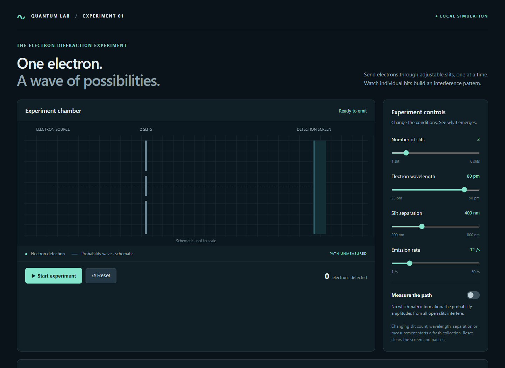
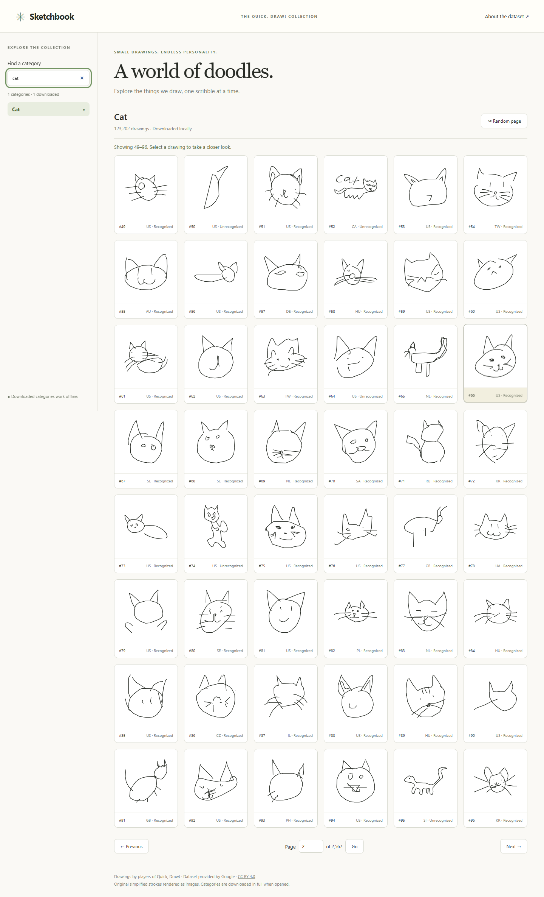

Things to explore 02
MADE TO BE CLICKED ↙
01 / QUANTUM LABOne electron at a time.
Fire electrons through slits and watch a wave pattern emerge. A small experiment with a surprisingly big idea.
Enter the experiment
02 / SKETCH ANALYSISA world of quick sketches.
Explore the Quick, Draw! dataset. Browse doodles, bring them to life, and find the patterns hiding in the scribbles.
Explore the drawingsThere’s always another idea.
More things will find their way here.